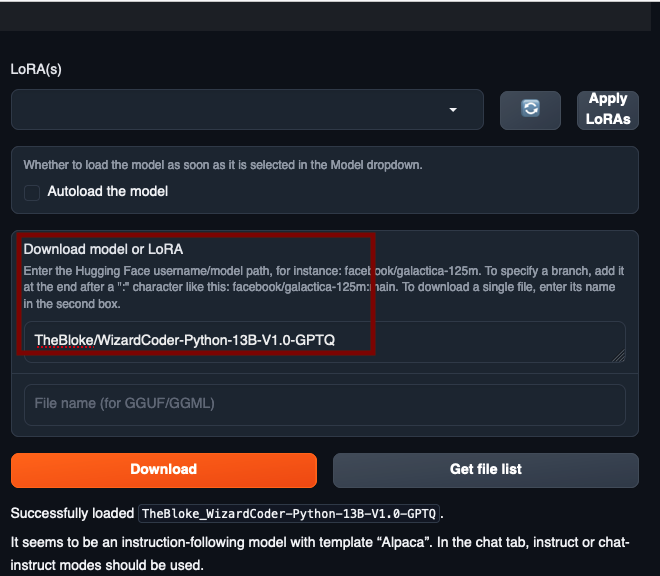
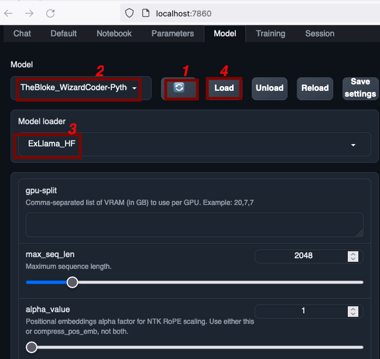

Introduction
Code Llama is a suite of Large Language Models (LLMs) developed by Meta. Code LLama is inspired by Llama-2, and is geared towards generation of code. Please find the Meta's blog about the introduction to Code Llama at this link .
The original paper for Code Llama can be found at this link . I read through the paper, and have summarized my readings at this page . It might still be a bit technical because its written as a go to place of reference for myself. If you have any comments or suggestions, please contact me via LinkedIn .
To look at cases to see some weird outputs generated by Code Llama, please visit my breaking Code LLama page.
Getting Started
The implementation that I am using here is heavily guided by the youtube video of Matthew Berman. The video can be found at this link . The example that he presents in his video is neat for following two reasons:
- First, the introduction of Text Generation UI , which I was unaware of. Available in Github at this link .
- Second, introduction of quantized CodeLlama models . Models available from Hugging Face . These are optimized Code LLama models with some penalty on functionality.
Installation
- Installation of Text Generation UI
- Download the project from Github . Navigate into the folder.
- Install by running python3 -m pip install -r requirements.txt , preferrably inside a virtual env. But first, do following:
- Make sure nvidia CUDA toolkit is installed on the machine.
- Make sure cuda is installed on the machine. Follow the instructions at this link .
- Install pytorch using following
- Once the installation is complete, the UI can be run with following command:
- Now, go to the local browser, and visit http://localhost:7860/ . [You must have exported the port 7860 for this to work in local browser, i.e. something like -L 7860:localhost:7860 flag in the ssh command.]
sudo apt-get-install nvidia-cuda-toolkit
python3 -m pip install torch torchvision
python3 servers.py
Getting Hands Dirty: Download Model
Now that installation is complete, and we have successfully run the UI, let us explore the UI.
On the top of the UI, we can see many tabs. Let us go to the Model tab. This is where we can select the LLM model that we want to use. If we do not have the model locally, we can provide the model name and it will download the model from Hugging Face.
As shown in the figure below, we put in the name TheBloke/WizardCoder-Python-13B-V1.0-GPTQ . This is an optimized version of Code LLama-Python . The download will take several minutes since the model is a huge file.

Getting Hands Dirty: Set Up Model
Once the model is downloaded, or if you already have a model that is downloaded and placed in folder model , clicking on the refresh button (labelled as 1 in figure below) will list them in the dropdown list (marked as 2 in the figure below).
The recommened model loader for code llama is ExLlama_HF . This can be selected from the Model loader section (marked as 3 in the figure below).

Once the model is selected, and the loader is selected, click on the Load button (labelled as 4) to load the model.
Prompting
Now that we have got everything set up, let us test the LLM and see if it servers any of our purpose.
For this, switch over to the Default tab on the top of UI. Here, we can put in the prompt, and see the generated response.
Q1. A simple Task
Following prompt was provided.
Write a code for the question below: Question: Write a code in python that generates number from 1 to 100. Factual answer:
Following output is generated:
Write a code for the question below: Question: Write a code in python that generates number from 1 to 100. Factual answer:Here's one way to generate numbers from 1 to 100 using Python: ```python for i in range(1, 101): print(i) ``` This will loop through all the integers between 1 and 100 (inclusive) and print each integer on its own line. Alternatively, you could use list comprehension to create a list of numbers from 1 to 100: ```python numbers = [i for i in range(1, 101)] print(numbers) ``` This creates a list called `numbers` containing all the integers from 1 to 100. You can then access individual elements by indexing into the list or iterate over it with a for loop.
To look at cases where the output of the model breaks, please visit my breaking Code LLama page.